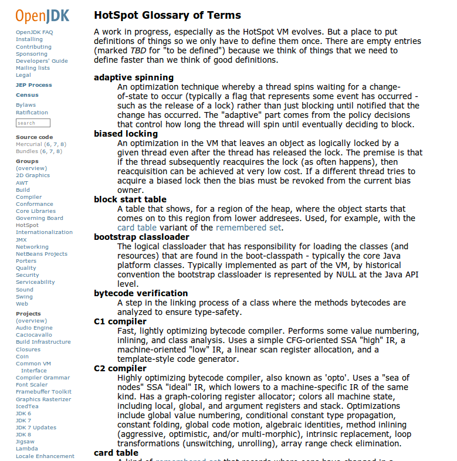

OpenJDK HotSpot Client Compiler Overview¶
タイトル¶
OpenJDK HotSpot Client Compiler Overview
第4回JVMソースコードリーディングの会
nothingcosmos<nothingcosmos@gmail.com>
OpenJDK キーワード¶
- HotSpotコンパイラ
- C1(Client)/C2(Server)コンパイラ
- JIT
- Adaptive Compilation
- Deoptimize 脱最適化
- 中間表現/中間言語
HotSpotの見どころ1¶
一般ユーザからみたコンパイラの見どころ
- ...
Scalaユーザからみたコンパイラの見どころ
Scalaでは細かいオブジェクトをたくさん作るので、 EscapeAnalysisがあると全部レジスタやスタックに乗る
という話を以前kmizuさんに聞いた記憶が...
毎回ヒープに割り付けないので、高速
HotSpotの見どころ2¶
私個人は、
- コンパイラ内部の中間言語構造とアーキテクチャ
- 大した最適化してないのに速いコードを吐くHotSpot Client Compiler
- 適応的コンパイル Adaptive Compilation
- JITコンパイラ/脱最適化のコントロール
- Profiling/Tracingの取得方法と活用方法
- HotSpot特有の最適化技術
- EscapeAnalysis/ClassHierarchyAnalysis
- 複数アーキテクチャへの対応方法
- OpenJDK7の最適化のバグ
本日紹介するC1 Compiler¶
OpenJDKのHotSpot Glossary of Termsより抜粋
Fast, lightly optimizing bytecode compiler.
Performs some value numbering, inlining, and class analysis.
Uses a simple CFG-oriented SSA "high" IR, a machine-oriented "low" IR,
a linear scan register allocation, and a template-style code generator.
- ValueNumbering
- 値番号付けというSSA形式を利用した最適化のアルゴリズムの名前. 冗長な式を削除する
- inlining
- インライン展開
- class analysis
- CHA(ClassHierachyAnalysis). クラス解析 仮想関数呼出の呼び出し先を特定する際に活躍する
- CFG-oriented SSA
- CFG ControlFlowGraph
- SSA StaticSingleAssignment form
- IR
- Intermediate Representation コンパイラ独自の中間表現
- linear scan register allocation
- リニアスキャンというレジスタ割り付けのアルゴリズム
- template-style code generator
- asmの生成はあまり頑張らない。LIRからシーケンシャルに生成
C1コンパイラの構成¶
hotspot/src/share/vm
- c1 <– C1コンパイラの本体
- compiler <– コンパイラの抽象クラス
- runtime <– JVMのruntime部分
hotspot/src/share/vm/c1
C1コンパイラ 全体で36kstep
top5
c1_LinerScan 7700step LinerScanでレジスタ割り付け
c1_LIR 4300step LIR(Low-Level IRの定義)
c1_GraphBuilder 4200step BytecodeからHIRへの変換
c1_LIRGenerator 3500step HIRからLIRへの変換
c1_Instruction 3300step HIR(High-Level IR)の定義
vm/c1/*
c1_CFGPrinter.cpp <-- -XX:+PrintCFGToFile オプションを指定時、
c1_CFGPrinter.hpp 中間表現のHIRやLIRをxmlで出力。c1visualizerで解析する
c1_Canonicalizer.cpp <-- HIRへ変換する際に正規化する
c1_Canonicalizer.hpp c1_GraphBuilderから呼ばれる
c1_CodeStubs.hpp <-- LIRやAssemblerで挿入される、JVMのciXX/runtime向けのStub
c1_Compilation.cpp <-- C1コンパイラのコントローラー Driver???
c1_Compilation.hpp
c1_Compiler.cpp <-- C1コンパイラの本体
c1_Compiler.hpp
c1_Defs.cpp <-- architecture依存の各種定義ファイル レジスタとか
c1_Defs.hpp
c1_FpuStackSim.hpp <-- architecture依存のFPUStackのシミュレータの定義ファイル
c1_FrameMap.cpp <-- architecture依存のFrameMapや仮想レジスタやCallingConvension
c1_FrameMap.hpp
c1_GraphBuilder.cpp <-- BytecodeからHIRへの変換
c1_GraphBuilder.hpp 各種最適化も行う(inlining, devirtualize, canonicalize
c1_IR.cpp <-- IRの定義
c1_IR.hpp HIR/LIR/BB/各種helperを統合したIRという名のDescripter
c1_Instruction.cpp <-- HIRの定義や、IRクラスのUtility
c1_Instruction.hpp
c1_InstructionPrinter.cpp <-- HIRのprinter 見やすいように情報を絞って整形して表示する
c1_InstructionPrinter.hpp
c1_LIR.cpp <-- LIRの定義
c1_LIR.hpp
c1_LIRAssembler.cpp <-- LIRからAsmのemitter兼helper Asmのコード生成
c1_LIRAssembler.hpp
c1_LIRGenerator.cpp <-- HIRからLIRへの変換
c1_LIRGenerator.hpp 命令選択、レジスタ割り付け、LIRレベルの最適化も行う。
c1_LinearScan.cpp <-- LinearScanレジスタ割り付け
c1_LinearScan.hpp
c1_MacroAssembler.hpp <-- architecture依存のAsm出力用マクロ(Assember向けpsuedo code)
c1_Optimizer.cpp <-- HIR向け各種最適化 Eliminate (const expr|blocks|null checks)
c1_Optimizer.hpp
c1_Runtime1.cpp <-- C1コンパイラのRuntime JVM本体のruntimeとの橋渡し
c1_Runtime1.hpp
c1_ValueMap.cpp <-- HIR向け最適化 ValueNumberingの本体
c1_ValueMap.hpp
c1_ValueSet.cpp <-- HIR向けADT @todo
c1_ValueSet.hpp
c1_ValueStack.cpp <-- HIR向けADT @todo
c1_ValueStack.hpp
c1_ValueType.cpp <-- C1コンパイラ内部のIR向け型定義
c1_ValueType.hpp
c1_globals.cpp <-- C1コンパイラ向けのオプション定義
c1_globals.hpp
※ architecture依存と書いたものは、hotspot/src/cpu/XXX/vm の下に本体がいる。
※ architectureは、x86_32/x86_64 sparc zero がある